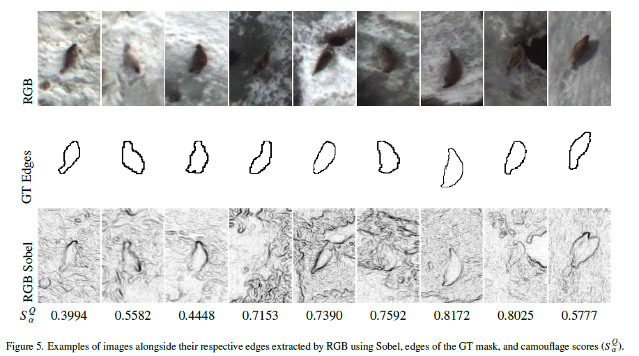
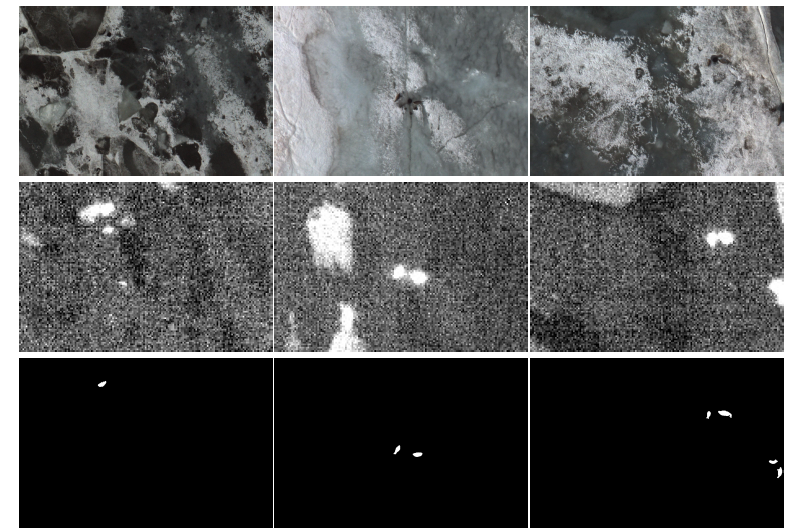
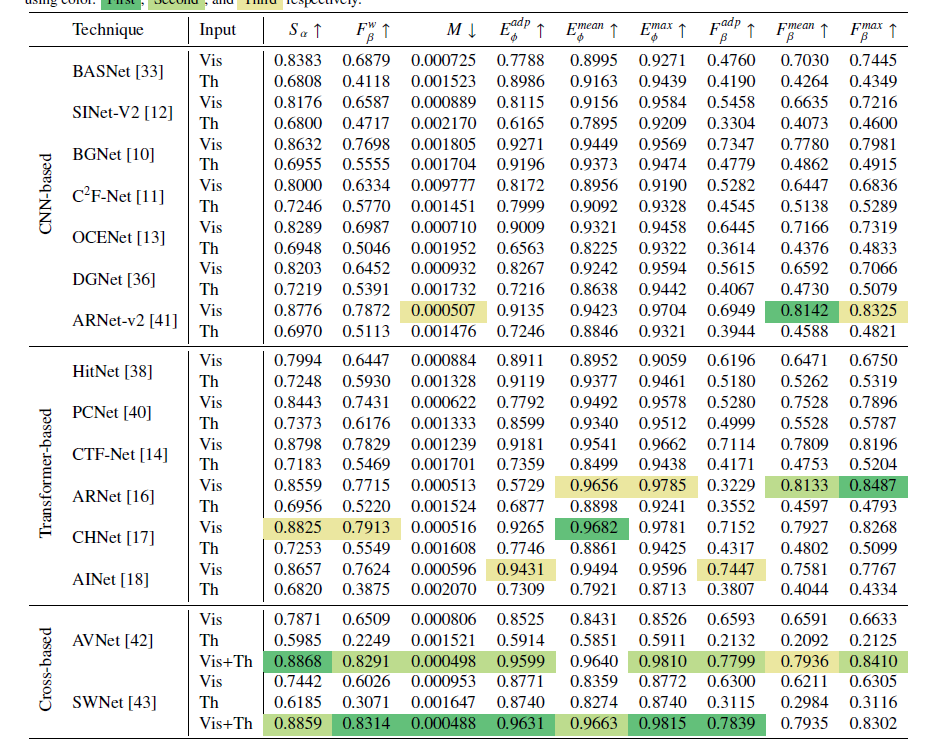
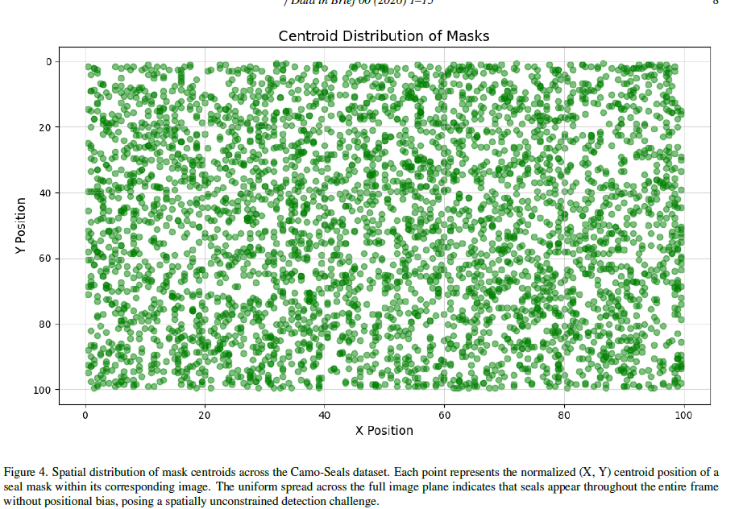

Abstract
This paper introduces Camo-Seals, a new benchmark dataset for cross-spectral camouflaged seal detection built from co-registered visible–thermal aerial image pairs acquired during Arctic wildlife surveys. To ensure a standardized and comprehensive evaluation, five widely recognized camouflaged object detection (COD) metrics are adopted, encompassing structural similarity, boundary accuracy, and global alignment. Fifteen state-of-the-art COD architectures are benchmarked across RGB, thermal, and fused cross-spectral inputs, covering a broad range of CNN-based, transformer-based, and multimodal designs. Results demonstrate that cross-spectral fusion consistently outperforms unimodal inference, with SWNet and AVNet achieving the best overall performance when combining RGB and thermal modalities, surpassing all single-modality baselines by up to 13% in weighted F-measure. The Camo-Seals dataset is publicly released to foster research at the intersection of computer vision, cross-spectral fusion, and ecological monitoring of camouflaged Arctic wildlife.

Examples of images alongside their respective edges extracted by RGB using Sobel, edges of the GT mask, and camouflage scores

Representative image samples from the Camo-Seals dataset. Each column corresponds to a registered cross-spectral pair: RGB images (1st and 4th row), co-registered thermal infrared images (2nd and 5th row), and their corresponding binary ground-truth segmentation masks (3rd and 6th row).

Metric evaluation results for each COD technique on the Seals dataset, reported for the RGB and Thermal baseline

Spatial distribution of mask centroids across the Camo-Seals dataset. Each point represents the normalized (X, Y) centroid position of a seal mask within its corresponding image. The uniform spread across the full image plane indicates that seals appear throughout the entire frame without positional bias, posing a spatially unconstrained detection challenge.
Poster
BibTeX
@article{velesaca2026camoseals,
title={Camo-Seals: A Cross-Spectral Benchmark Dataset for Camouflaged Seal Detection in Arctic Aerial Imagery},
author={Velesaca, Henry O and Miranda, Luigi and Mero, P Andrea and Jalca, Ana Maria and Sappa, Angel D},
journal={Data in Brief},
year={2026},
publisher={Elsevier}
}